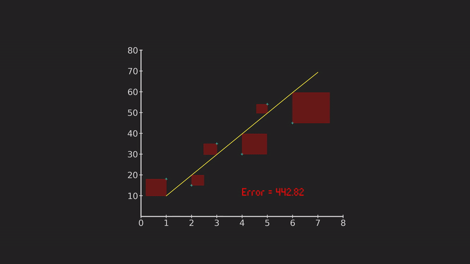

Support Vector Machine: Clearly Explained
Support Vector Machine: Clearly Explained
SVM is an algorithm that can be used to make predictions but it is more commonly seen making classification. It is part of the supervised learning category, which means that using examples from the past and labels on expected results one can teach a computer to classify. SVM as linear regression is one of the basic machine learning algorithms you need to have in your toolbox.
Some typical use cases are facial recognition, it is used to classify text, images and in the field of bioinformatics.
This algorithm was actually the state of the art solution before neural networks came around.
The intuitive explanation is as following…

if we have data that looks like figure 1, SVM is basically trying to draw a line between the two groups and divide in two classes. We set as 1 everything above the upper line and -1 below the lower line. Anything in between those lines we call it 0 or unclassified.
The real trick is to find the best line to capable to divide our data. We could have a line like in figure 2 and 3, but as we can see in figure 4, having lines too close to the data makes it very likely to find some new data points in the unclassify area, lowering the accuracy by significant amounts.
So, how do we find the best line?. We follow the rule of the “widest street”. The algorithm finds the sidewalks first (support vectors) and then the middle of the street, as we can see in figure 1. Once we have found these three lines we are ready to classify new data.
That is the idea behind SVM. The mathematics are a bit confusing so I will try to break it down for you in this article.
Restrictions
We are going to need 3 basic lines, they will divide our space in 3 areas.
The lines are described by these equations:
`w^T·x+b>=1`, `w^T·x+b=0`, `w^T·x+b<=-1`
And as you can see in figure 6, our space is divided in3 parts, each part will label the data as 1, -1 and 0 in the center.
So far so good, the real trick is in finding those 3 lines and for that, the first step is to use a mathematical convenience:
`{(y_i=1 -> Class 1), (y_i = -1 -> Class 2):}`
And we use it as follows:
In the case we encounter an item of class 1:
`y_i(w^T·x+b)>=1`
`color(#00b300)(+1(w^T·x+b)>=1)`
+1 times something equals 1 or greater
In the case we encounter an item of class 2:
`y_i(w^T·x+b)<=-1`
`-1(w^T·x+b)<=-1`
`(-1)-1(w^T·x+b)<=-1(-1)`
`color(#00b300)(+1(w^T·x+b)>=1)`
+1 times something equals 1 or greater
We get to the same equation, and I know it doesn seem like much but this mathematical convenience let’s us use only one expression to embed our 3 lines and manipulate our restrictions with ease.
Awesome!
Optimization
The next step is to check pairs of vectors from both classes, propose sidewalks and check how wide they are, the algorithm does this a few times until the right vectors are found, but right now let’s focus only on how we find the distance between those vectors.
I guess it's obvious the the first step is to find the difference between both vectors `(vec v_1 - vec v_2)`. The result will be a new vector `vec v_d` that will get close to be the distance we are looking for but not quite.
Now, imagine we set a new vector `vec w_u` perpendicular to the line marked by `vec v_2` and this particular vector is aunitary one. If we take the dot product of such vector `vec w_u` with `(vec v_1 - vec v_2)` we would get the wide of the street. We can see in figure X, my attempt to describe this more intuitively.
Good. Now we have `(vec v_1 - vec v_2)·vec w_u = ` Width of Street.
Another way to write a unitary vector is like this: `vec w_u = vec w/norm(vec w)`. This is basically taking away from the vector all its amplitude, leaving only the basis multiplied by an amplitude of one.
So now we have: `W_{Street} = (vec v_1 - vec v_2)·vec w/norm(vec w)`.
Great! Look what happens if we solve the restriction we discussed above and combine the results to our equation.
`y_i(w^T·x+b)-1>=0 {(x=Class1 -> y_i=1), (x=Class 2-> y_i = -1):}`
In the case of class 1:
`y_i(w^T·vec v_1+b)-1>=0`
`+1(w^T·vec v_1+b)-1>=0`
`color(#ff8000)(w^T·vec v_1=1-b)`
We can subsitute:
`(color(#ff8000)(vec v_1) - vec v_2)·color(#ff8000)(vec w)/norm(vec w)`
In the case of class 2:
`y_i(w^T·vec v_2+b)-1>=0`
`-1(w^T·vec v_2+b)-1>=0`
`color(#0000ff)(-w^T·vec v_2=1+b)`
We can subsitute:
`(vec v_1 color(#0000ff)(- vec v_2))·color(#0000ff)(vec w)/norm(vec w)`
Having as a result: `(color(#ff8000)((1-cancel(b))) + color(#0000ff)((1+cancel(b))))/norm(vec w)=color(#00b300)(ubrace(2/norm(vec w))_("Awesome result"))`
The reason that results is awesome is because if we focus on minimize `norm(vec w)` we get the highest value of the expression, giving us the widest street. We rewrite the expression in such a way that will be easier for us to differentiate later.
`1/2norm(vecw)^2`
Our job now is to minimize this equation in order to get the widest street.
Lagrange multipliers
The last part we need to understand this algorithm, and in fact the part where we get to see the expression that describes the full process of how SVM works is called lagrange multipliers.
This method is used to get values from one equation taking into account a set of restrictions or rules, which is exactly what we need. Applied to the functions we already discussed, this method would look as follows:
`L = ubrace(1/2norm(vecw)^2)_("Optimization") - sum ubrace(alpha_i)_("Lagrange multipliers")[ubrace(y_i(w^T·vec v_2+b)-1)_("Restriction")]`
And in order to solve our problem we need to differentiate by our unknowns using partial derivatives.
`(deltaL)/(deltaw) = vec w - sum alpha_i y_i x_i = 0`
`(deltaL)/(deltab) = - sum alpha_i y_i = 0`
Solving...
`vec w = sum alpha_i y_i x_i`
`- sum alpha_i y_i = 0`
`y_i(w^T·vec v_2+b)-1 >=0`
With these 3 equations, we can substitute the values in our original `L` and solve.
If we do that we get: `L = sum alpha_i - 1/2 sum_i sum_j alpha_i alpha_j y_iy_j color(red)(x_i x_j) `
And this particular equation is telling us all. We check our restrictions and search for the widest street by taking pairs of vectors, one for each class until we find the right support vectors.
Kernels
References
Project used for animations: https://github.com/jfreek/math_animations